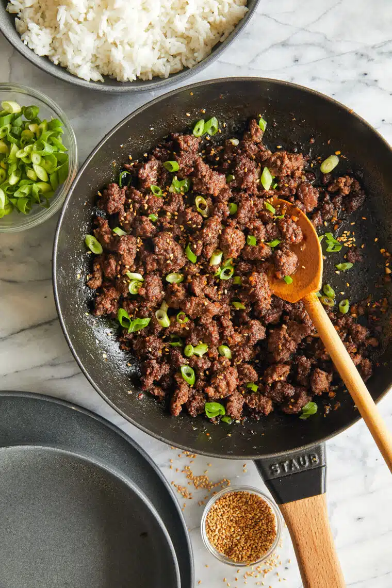

Home
Korean Beef Bowl

Description
This recipe is a Korean style beef bowl originally published by Damn Delicious.
It is the perfect quick weeknight dinner. This dish is best served with rice and
your choice of vegetables.
Ingredients
- 1/4 cup brown sugar, packed
- 1/4 cup reduced sodium soy sauce
- 2 tsp sesame oil
- 1/2 tsp crushed red-pepper flakes, or more to taste
- 1/4 tsp ground ginger
- 1 tbsp vegetable oil
- 3 cloves garlic, minced
- 1 lb ground beef
- 2 green onions, thinly sliced
- 1/4 tsp sesame seeds
Steps
- In a small bowl, whisk together brown sugar, soy sauce, sesame oil, red pepper flakes, and ginger.
- Heat vegetable oil in a large cast iron skillet over medium high heat. Add garlic and cook, stirring constantly, until fragrant, about 1 minute. Add ground beer and cook until browned, about 3-5 minutes, making sure to crumble the beef as it cook; drain excess fat.
- Stir in soy sauce mixture and green onions until well combined, allow to simmer until heated through, about 2 minutes.
- Serve immediately, garnish with green onion and sesame seeds, if desired.